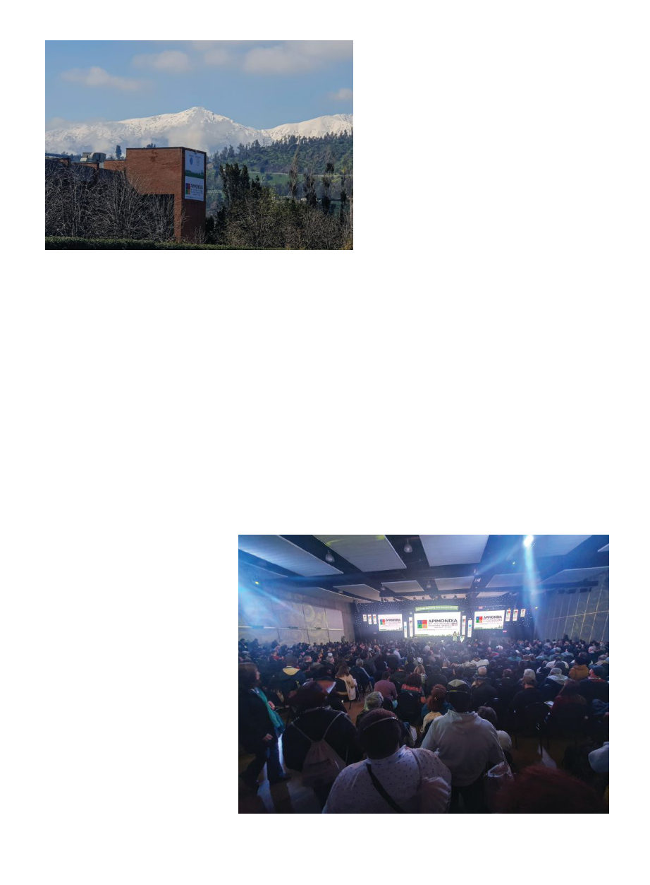

November 2023
1201
I
f you were to arrive in Santiago,
Chile on the evening of this past
September 3, you would see the
city spreading out before you under
a backdrop of the jagged snowy An-
des, glowing pink in the twilight. At
least that’s how it looked when I was
leaving Friday night, but I arrived the
morning of the 4th after an uncom-
fortable overnight flight from Bogota,
and then slept until nearly noon and
thus lost my only opportunity to do
some sightseeing.
This past September 4-8 was the
48th Apimondia World Beekeeping
Congress. The Apimondia confer-
ence is held once every two years, in a
different country each time. I had at-
tended just once previously, in 2017
in Istanbul, though in 2014 I attended
an Apimondia regional symposium in
Arusha, Tanzania, which was compa-
rable in size and professionalism.
The conference consists of a week
of presentations, simultaneously oc-
curring in four halls, in this case in
a convention center called the Espa-
cio Riesco. The overall theme of this
year’s conference was “Sustainable
beekeeping, from the south of the
world.” Each hall had a series of pre-
sentations around a topic such as “bee
biology,” “bee health,” “technology,”
“pollination,” “apitherapy,” “rural
development,” and some regional
sessions dedicated to, for example,
Europe, Africa or the Americas.
There were, in all, over 230 speak-
ers. One can bounce between the
halls to catch all the presentations
that catch one’s interest. Translation
at this conference was offered via
headsets into English, Spanish or Por-
tuguese. One gripe I had was that one
needed a different pair of headphones
for the bottom two halls than for the
upper two, and it was a bit of a bother
going to the desk to trade them con-
stantly. Eventually I realized though
that as you needed to trade in your
driver’s license (or passport!) for the
headphones, and I have both U.S.
and Australian driver’s licenses, I just
used both IDs and got both sets of
headphones.
There was also an expo section with
over 120 exhibitors. There were rep-
resentatives of many of the biggest
equipment manufacturers with some
of their newest products on display,
as well as other organizations, and na-
tional booths for Brazil (huge), Argen-
tina, Tanzania, Mozambique, South
Africa, Slovenia, Hungary, Dubai,
and Ukraine.
At every Apimondia there is a vote
among the voting delegates at the
end to determine where the next-af-
ter-next conference will be. The next
one in 2025 is already set at Copenha-
gen, but at this conference we would
be determining 2027, and hence Tan-
zania had a fairly big booth promot-
ing their bid for 2027. In competition
with them was Dubai, who actually
had a very small booth. Personally I
was heavily in favor of Tanzania, and
worried that perhaps Dubai’s booth
was so small because they were so
overwhelmingly confident they’d
have it in the bag. Also I was rather
surprised to see at Hungary’s booth
that they are already campaigning to
host in 2029. I’ve never been able to
figure out who my representatives
in the voting are, which I wish was
easier to figure out because I usually
have a strong opinion on where the
next meeting should be. (In 2017 I
would have voted Slovenia over Rus-
sia and I think in retrospect now that
by Kris Fricke
Apimondia
2023
Santiago
230 speakers, 120 vendors,
and not nearly enough time
More than 3800 people attended the 5-day conference.